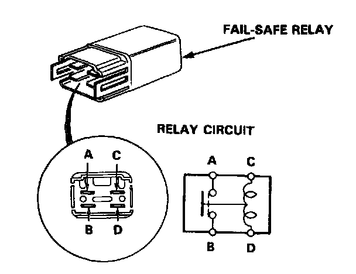
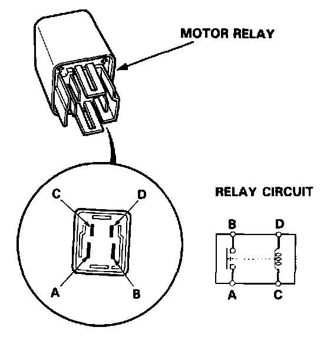

Fail Safe Relay: Testing and Inspection
Relay Inspection1. Remove the fail-safe relay from the under-dash fuse/relay box.
2. Check for continuity between the terminals A and B. There should be no continuity.

3. Connect a 12 V battery across the terminals C and D. There should be continuity between the terminals A and B.
4. Remove the motor relay from the under-hood ABS fuse/relay box.
5. There should be continuity between the C and D terminals.

6. There should be continuity between the A and B terminals when the battery is connected to C and D terminals. There should be no continuity when the battery is disconnected.